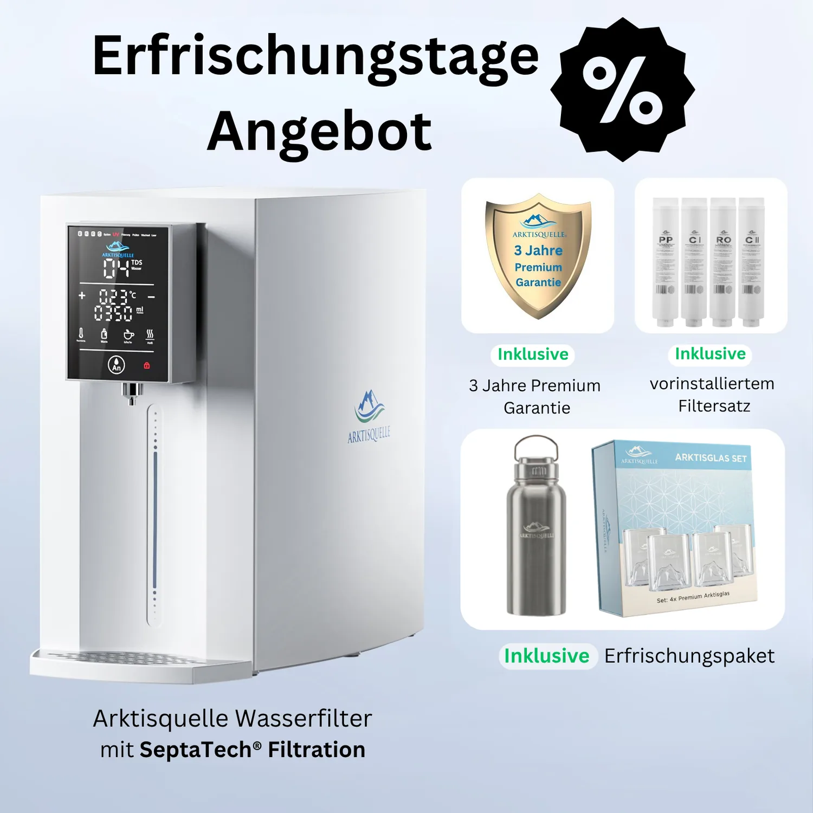

Countertop RO
Arktisquelle Direct Flow Premium
Arktisquelle-Osmose-Filtersystem aus dem aktuellen Hersteller-Sortiment; genaue Ausstattung ist variantenabhängig.
Preis auf Anfrage
Technische Daten
| Modellstatus | „Direct Flow Premium“ ist in der verlinkten aktuellen Collection nicht eindeutig ausgewiesen |
| Technologie | Umkehrosmose laut ursprünglicher Modellangabe |
| Produktgruppe | Arktisquelle Wasserfiltersysteme |
| Ausführung | Aktuelles abgebildetes Arktisquelle-Auftischsystem |
| Bedienung | Modellabhängig |
| Temperaturfunktionen | Modellabhängig |
| Preis | Abhängig vom aktuell angebotenen Paket |
| Datenhinweis | Nicht veröffentlichte Werte wurden nicht aus anderen Modellen übernommen |
Datenhinweis
Die Angaben stammen aus öffentlich zugänglichen Hersteller- und Produktunterlagen. Nicht veröffentlichte Werte wurden nicht geschätzt. Änderungen und Modellvarianten sind möglich.